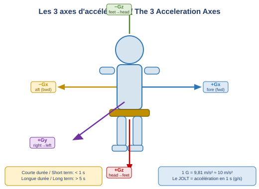
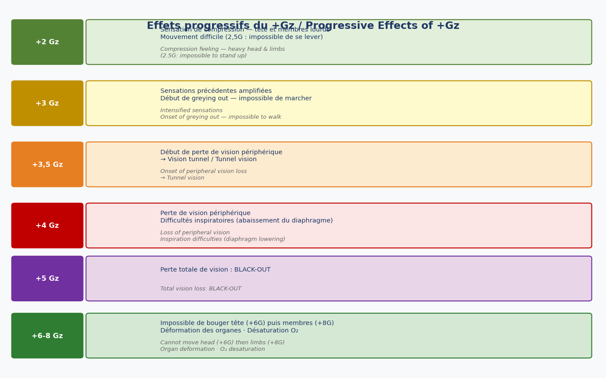
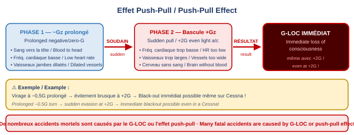
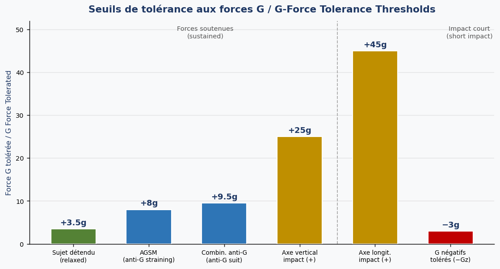
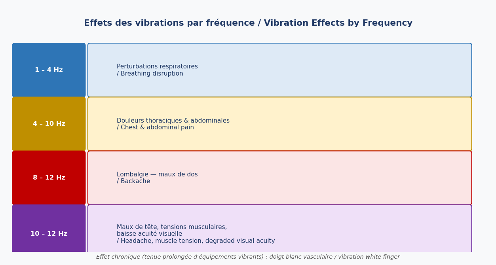

Introduction
En aviation, le corps du pilote subit des forces bien supérieures à la simple gravité terrestre. Ces forces — les accélérations — ont des effets physiologiques directs pouvant aller jusqu'à la perte de conscience. Les vibrations, quant à elles, génèrent une fatigue chronique et des douleurs selon leur fréquence. Comprendre ces phénomènes est essentiel pour la sécurité des vols, notamment en contexte militaire mais aussi dans l'aviation commerciale.
1. Sources d'accélérations et de vibrations
1.1 Sources d'accélérations / Sources of accelerations
Les accélérations en vol proviennent de nombreuses situations :
- Décollage et atterrissage (Take-off & landing)
- Mise en palier (Level off)
- Virage (Turn) — source principale de +Gz en vol civil
- Turbulences (Turbulence)
- Ajustement de puissance (Power adjustment)
- Freinage (Braking action)
- Domaine militaire : voltige, combat, manœuvres d'évitement (aerobatics, combat, evasive manoeuvres)
1.2 Sources de vibrations / Sources of vibrations
- Moteurs (Engine)
- Extension des volets (Flaps extension)
- Sortie du train d'atterrissage (Gear extension)
- Turbulences (Turbulence)
2. Définitions / Definitions
Variation de vitesse par unité de temps — rate of change in velocity
2.1 Types d'accélérations en médecine aéronautique
En médecine aéronautique, on distingue trois types d'accélérations :
- Linéaire (Linear) : en ligne droite — décollage, atterrissage (T/O, LDG)
- Radiale (Radial) : en virage — c'est la plus importante physiologiquement
- Angulaire (Angular) : rotation autour d'un axe passant par le corps du pilote — voltige, vrille après éjection (aerobatics / tumbling after ejection)
2.2 Les 3 axes / The 3 axes

- Gx : axe avant-arrière (fore & aft) — accélération/décélération longitudinale
- Gy : axe gauche-droite (right-left) — latéral
- Gz : axe tête-pieds (head-feet) — le plus impactant physiologiquement
JOLT = augmentation de l'accélération en une seconde, exprimée en g/s (rate of increase of acceleration per second)
Courte durée / Short term : < 1 s | Longue durée / Long term : > 5 s
3. Effets du +Gz (G positif)
Les accélérations radiales et angulaires, notamment selon l'axe Gz, ont des répercussions physiologiques majeures. Quand le +Gz augmente, la colonne de sang s'accumule vers le bas du corps. Le cœur doit travailler davantage pour maintenir la pression sanguine cérébrale, ce qu'il ne peut plus faire au-delà d'un certain seuil.
Mécanisme principal : la distance cœur-pieds augmente (le sang descend par gravité), tandis que la distance cœur-cerveau devient difficile à compenser. De facto, le cerveau se retrouve en hypoperfusion.

- +2 Gz : compression, membres lourds — compression feeling, heavy limbs
- +2,5 Gz : impossible de se lever — impossible to stand up
- +3 Gz : début du greying out, impossible de marcher
- +3,5 Gz : début de perte de vision périphérique → vision tunnel (tunnel vision)
- +4 Gz : perte totale de vision périphérique, difficultés inspiratoires (abaissement du diaphragme)
- +5 Gz : BLACK-OUT — perte totale de la vision (total loss of vision)
- +6 Gz : impossible de bouger la tête (cannot move head)
- +8 Gz : impossible de bouger les membres (cannot move limbs)
3.1 Effets internes du +Gz / Internal effects
- Organes déformés et/ou déplacés vers le bas (organs deformed and/or pushed down)
- Ventilation pulmonaire modifiée (pulmonary ventilation modified)
- Fréquences cardiaque et respiratoire augmentées (heart and respiratory rate increased)
- Pression artérielle augmentée sous le cœur, diminuée au-dessus
- Désaturation en oxygène (oxygen desaturation)
4. Effets du −Gz (G négatif)
Les manœuvres en G négatif sont bien plus inconfortables que les G positifs. L'ensemble des organes est refoulé vers le haut et le sang se concentre dans la tête.
- Organes repoussés vers le haut, sang vers la tête (organs pushed up, blood goes to the head)
- Difficultés respiratoires, visage gonflé, yeux injectés de sang
- RED-OUT (vision rouge / red mist) : phénomène visuel dû à la congestion des paupières inférieures
- Rythme cardiaque ralenti, vaisseaux des membres inférieurs dilatés (heart rate slows, lower body vessels dilate)
- Pression artérielle élevée dans la tête → éclatement de petits vaisseaux sanguins sur le visage et dans les yeux : pétéchies / petechiae
- +Gz → sang vers le bas → greying out → black-out (vision blanche puis noire)
- −Gz → sang vers la tête → red-out (vision rouge)
- Le −Gz est ressenti comme nettement plus inconfortable pour une valeur absolue équivalente
5. Perte de conscience / Loss of Consciousness
5.1 G-LOC — Gravity-induced Loss Of Consciousness
Le G-LOC survient +0,5G au-delà du seuil de black-out. Si un G positif élevé est appliqué soudainement (jolt élevé) :
- Le sang cérébral descend instantanément dans le corps
- Le cœur ne peut pas compenser la chute de pression dans la partie supérieure
- Le pilote perd immédiatement conscience sans greying out préalable
5.2 Caractéristiques du G-LOC / G-LOC features
- Peut être totalement ignoré sans avertissement (can be totally ignored without warning)
- Peut laisser des souvenirs étranges : sons de cloche, lumières (strange souvenirs: bell sound, lights)
- Peut produire des mouvements convulsifs de la tête et des membres — ce n'est pas de l'épilepsie (not epilepsy)
- Peut provoquer une amnésie (can imply amnesia)
- Phase de latence / Latency phase : 5 secondes (après interruption de l'apport en oxygène)
- Incapacité absolue / Absolute incapacity : 5 à 20 s, en moyenne 15 s
- Incapacité partielle / Partial incapacity : 1 à 50 s, en moyenne 15 s
A-LOC (Almost G-LOC) : quasi-perte de conscience avec confusion et désorientation spatiale, altération du jugement (confusion with spatial disorientation and impaired judgment)
5.3 Effet Push-Pull / Push-Pull Effect

L'effet push-pull est particulièrement dangereux car il peut survenir même à bord d'un avion léger comme un Cessna, à des niveaux de G apparemment faibles (+2G).
Mécanisme : après une période prolongée en G négatif ou nul (−0,5G par exemple), le cœur bat lentement et les vaisseaux des jambes sont dilatés. Si le pilote bascule soudainement vers un G positif, même modéré, le cœur et les vaisseaux ne peuvent pas s'adapter : le cerveau est privé de sang instantanément.
6. Susceptibilité aux forces G / Susceptibility to G Forces
Certains facteurs réduisent la capacité à supporter les forces G. Ces facteurs doivent être mémorisés — ils apparaissent régulièrement en examen.
- Hypoxie / Hypoxia
- Hyperventilation / Hyperventilation
- Hypotension / Hypotension
- Stress / Stress
- Fatigue / Fatigue
- Chaleur / Heat
- Hypoglycémie / Low blood sugar
- Déshydratation / Dehydration
- Digestion en cours / Digestion
- Tabagisme / Smoking
- Obésité / Obesity
- Alcool / Alcohol
7. Tolérance et moyens de protection / Tolerance and Protection
7.1 Valeurs de tolérance / Tolerance values
Un individu détendu non entraîné tolère jusqu'à +3,5G sans effets graves. L'entraînement et les équipements permettent de repousser ce seuil considérablement.

7.2 Moyens d'amélioration de la tolérance / Ways to improve tolerance
1 — Réduire la distance verticale cœur-cerveau (reduce the vertical distance between heart and brain)
- Position allongée idéale (lying position — navette spatiale)
- Inclinaison du siège vers l'arrière : 19° sur Mirage 2000, 30° sur Rafale/F-16
2 — AGSM : Anti-G Straining Manoeuvres (Manœuvres anti-G)
- Contraction des muscles abdominaux et des jambes (tensing abdominal and leg muscles)
- Courtes expirations saccadées (short panting breaths)
- Surpression thoracique (thorax surpression)
3 — Combinaison anti-G / Anti-G trousers
Augmente la tolérance de +1,5 à +2G (tolerance raised by +1.5 to +2G). Fonctionne par gonflage de poches abdominales et de jambes pour éviter la stagnation sanguine.
4 — Sélection à 100% d'oxygène avant vol de voltige ou combat (select 100% oxygen before aerobatic or combat flight)
5 — Entraînement physique et centrifugeuse (training) : l'entraînement régulier améliore significativement la résistance aux accélérations.
8. Illusions sensorielles / Sensory Illusions
Les accéléromètres physiologiques (otolithes dans l'oreille interne) sont des capteurs inertiels. Les accélérations dont l'intensité est inférieure au seuil de détection ne sont pas perçues consciemment, mais peuvent induire de fausses informations de position — des illusions sensorielles (sensory illusions).
9. Effets des vibrations / Effects of Vibrations
9.1 Effets par plage de fréquences / Effects by frequency range

- 1 – 4 Hz : perturbations respiratoires / breathing disturbance
- 4 – 10 Hz : douleurs thoraciques et abdominales / chest and abdominal pain
- 8 – 12 Hz : lombalgies / backache
- 10 – 12 Hz : maux de tête, douleurs gorge, tensions musculaires, dégradation de l'acuité visuelle / headache, throat pain, muscle tension, degraded visual acuity
9.2 Effet chronique / Chronic effect
L'utilisation prolongée d'équipements vibrants (joystick, throttle, harnais) peut provoquer le syndrome du doigt blanc vasculaire (vibration white finger) : vasoconstriction chronique des doigts par lésion des vaisseaux sanguins distaux.
9.3 Prévention / Prevention
- Équilibrage acoustique des moteurs (acoustically balancing the engines)
- Amortissement des vibrations de panneaux (damping down panel vibration)
- Sièges rembourrés / amortisseurs (cushioned seats)
10. Résumé des valeurs clés / Key Values Summary
- Forces soutenues longue durée (> 1 s) : +3,5G détendu — +7 à +8G avec AGSM
- Forces d'impact courte durée : +25G et −3G axe vertical — +45G axe longitudinal
- Les effets sont principalement cardiovasculaires et pulmonaires, mais aussi neuro-sensoriels (illusions)
- Accélérations et vibrations = source de fatigue à intégrer dans la gestion de vie professionnelle